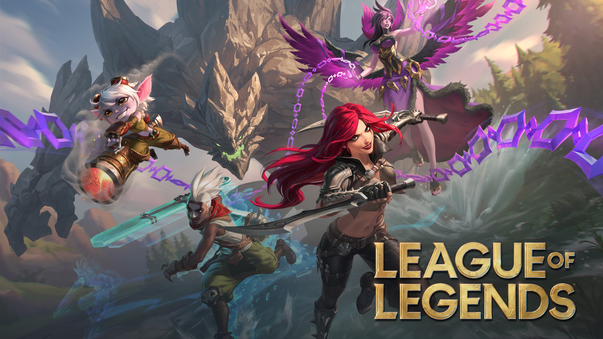

Presentations du jeu
- Les joueurs sont répartis en deux équipes équilibrées, composées principalement de cinq membres chacune.
- Chaque équipe démarre à un côté opposé de la carte, près de ce qu'on appelle un « Nexus ».
- Pour remporter la partie, une équipe doit détruire le Nexus de l'équipe adverse.
- Pour y parvenir, chaque équipe doit venir à bout d'une série de tours appelées « tourelles », placées le long de trois chemins menant à chaque base (généralement appelés « lignes »).
- En chemin, chaque joueur gagne en puissance en accomplissant des objectifs de jeu, ce qui lui rapporte des points d'expérience et de l'or, utilisés pour augmenter son niveau et acheter des objets puissants, pouvant ainsi lui donner un avantage sur ses adversaires.
- Parmi ces objectifs figurent l'élimination des tourelles, des joueurs et des « sbires » de l'équipe adverse (de petits PNJ qui apparaissent en continu et attaquent l'autre équipe).
Liste des champions
- Katarina - 2eme page wiki officiel
- Lee Sin - 2eme page wip wiki officiel
- Yasuo - 2eme page wip wiki officiel
- Ashe - 2eme page wip wiki officiel